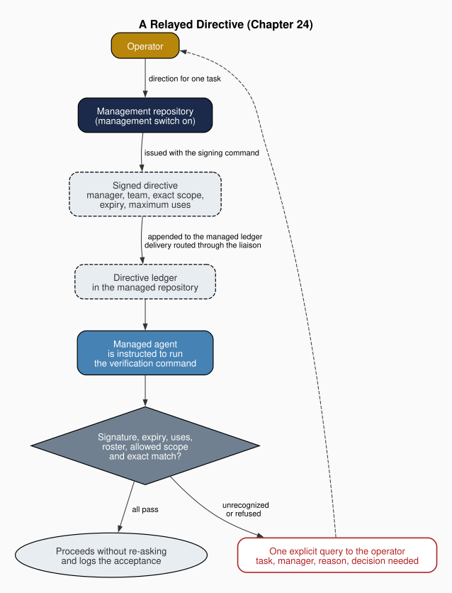

Chapter 24: The Management Layer: Fleets, Managers and Delegation
Part VI: Hardening and Scale
1. The Missing Level
Elinor Ostrom spent much of her career asking how fishers, irrigators and herders kept a shared resource from ruin without handing it to a state or dividing it into private plots. What she found in Ostrom (1990) was that the arrangements which lasted were seldom flat. The rules a user followed day to day had been made by people who could change them, and in the larger systems those rule-making bodies were themselves nested inside wider arrangements, which she called nested enterprises. In later work Ostrom (2005) separated the levels by the kind of situation each presents. In an operational situation people act under rules. In a collective-choice situation they make those rules. In a constitutional situation they decide who may take part in collective choice and on what terms. Buchanan and Tullock (1962) had drawn a parallel line between the choice of rules and the choices made under them, and they placed consent at the constitutional stage, where a person agrees to the terms on which later decisions will bind him.
The book has used these levels inside one team. Chapter 4 called a constitutional framework "inherently a multilevel framework that integrates diverse communities and their own particular constitution under a more general and more abstract constitution," and it said just as plainly where its own account stopped, noting that "the constitutional structure described in this chapter governs a single team." The synthesis follows Caton (2020b) in reading a team's invariant cores, agent instructions and individual actions as the constitutional, legislative and operational levels of a single order. That reading stops at the edge of the team.
Beyond that edge the levels thin out. When two teams in one workspace meet, Chapter 16 found that each orchestrator holds legitimate authority within its own project and neither holds authority over the other, and that "the workspace may have no formal constitutional agreement between projects about how they coordinate." Each peer has operational rules and a constitution of its own, and nothing stands above the pair. The liaison's Coordination Request settles one event by putting it before both principals. It makes no rule for the next event.
An obvious worry follows. The book's opening asked for a theory of governance that "scales across levels of analysis," yet a level above the teams looks like centralization, and the book has read the workspace as a polycentric order. Aligica, Boettke and Tarko (2019) describe polycentric governance as many decision centers, each with authority in its own domain, operating within an overarching system of rules. The worry has force against a level that commands. It has much less force against a level whose authority is limited and recognized from below, which is how Ostrom found higher levels working in the commons that endured. I add a condition of my own for agent teams, that such a level act on one named task at a time, and the question is what a level of this kind must do and what it can leave to procedure.
I argue in this chapter that the framework now supplies a level above peer teams without abolishing their sovereignty, and that the level is a sanctioned relay channel and not a legislature. A management repository is a team configured to pass the direction of the operator, the framework's name for the human principal, to other teams. It may relay that direction only for an exact, non-destructive task, and only to a team that has agreed in advance to recognize it. The layer as the framework describes it assumes one operator over every team it reaches. Where projects answer to different principals, the Coordination Request that goes before both remains the instrument. Each relay is an operational act. The channel is constituted from below, by each managed team's own choice of whom to recognize, and the rules on what a relay may carry are fixed in the framework and made by no manager. A spawning orchestrator answers for the conversations it creates. The procedures that keep many teams in step run without judgment, and so they need no standing authority at all. If a level above teams is to exist, the first question is who may speak for it, and the framework's first answer is local. Whoever starts a conversation answers for it.
2. Authority Follows the Spawner
Buchanan and Tullock placed consent at the constitutional stage, and I read their account as implying that authority conferred by consent is bounded by the terms on which it was conferred. A person who agrees to be bound by a rule has agreed to that rule, and on this reading the agreement does not stretch to whatever an official later wishes to require. Delegation among conversations shares only part of that shape. A delegate is created by its prime and gives no consent, so the parallel fails for the relation as a whole. It holds for the carve-out described below, which keeps a delegate's own constitution out of its prime's reach in the way consent keeps a person's terms out of an official's.
The framework states its answer as a principle, "authority follows the spawner." The conversation that spawns another is its prime, and the spawned conversation is its delegate. A delegate does not put questions to the user. Its user-facing questions route up to its prime, which resolves first by investigating the code, the brief and the context, and escalates only the items that need the user's judgment, consolidated into one query. In a run with no interactive user, the prime resolves everything itself and never blocks waiting for a person. Each ambiguous decision the prime makes on the user's behalf is logged to an escalation ledger with a flag for later review, and at the close of the session the prime reports the flagged rows.
A carve-out for questions keeps the funnel from turning into a chain of command. The prime settles only the questions that are its own to decide, such as how tasks are allocated, which come first and what the original task list meant. A question whose answer would bind the delegate repository's own constitution or its user goes instead to the liaison as a peer coordination request. A refusal branch does the same for directives. Registry-primary authority belongs to whichever repository serves as the canonical template source when file updates propagate across a fleet. When the prime directs something that the delegate's own invariant core or registry-primary standing forbids, the delegate refuses and reports the matter as a peer conflict. Without the refusal, the framework notes, the funnel would permit a constitutional inversion. The prime answers for its delegates' questions and has no power over their constitutions.
The framework warns against conflating spawner authority with three other axes it names, and two of them carry the rest of this chapter. Management authority, which decides whether a managed team honors a manager's signed directive, is the subject of the next section. Peer sovereignty, the authority over a repository's own constitution, is what the refusal branch protects and what the last section finds intact. Registry-primary authority matters here only because a prime may sit in a repository that is not the template source. The framework permits such ambiguous hierarchies and leaves the operator to manage them, so a hierarchy of conversations stays narrower than a hierarchy of teams.
The principle qualifies a sentence from the account of the orchestrator. Chapter 5 observed of the routing table that "No other agent can invoke the orchestrator," and read the asymmetry as least authority. That remains true inside one team. Within a repository an orchestrator may now spawn a child orchestrator for a coordinating body of work, and across conversations one orchestrator may become another's prime. In both cases the invocation runs from an orchestrator downward and never from a specialist upward, so the least-authority reading survives.
Only one part of the principle is backed by a runtime, and only on one provider. On Claude a subagent's output returns to its spawner and not to the user, so a delegate there cannot prompt the user directly. Resolving first, the carve-out, the refusal branch and writing the ledger are governance prose on every framework, and on Goose, Codex and agents-md the framework records that even the rule against direct contact with the user is prose. The escalation ledger is the only surface on which a silent self-resolution can be detected, which places most of the funnel on the accountability side of the line Chapter 22 drew. Spawning also covers only the conversations one session creates. A standing relation between repositories that never spawn one another needs a different instrument.
3. The Management Repository and the Signed Directive
Among the design principles Ostrom (1990) drew from long-enduring commons, two concern the relation between levels. The users' right to devise their own institutions is not challenged by outside authorities, and in larger systems the work of governance is organized in multiple layers of nested enterprises. Read together, the two describe a higher level that exists by the lower level's recognition and acts through it.
The framework builds its level above the teams in this form. A team becomes a management repository only when its brief turns on a management switch, and the switch is off by default. Turning it on lets the team issue directives and gives it no write into a managed repository, since delivery runs through the liaison. The liaison's transport writes the signed row into the manager's own repository and leaves carrying it across to the operator, by hand or by dispatch. Under the single writer the liaison writes nothing, so the orchestrator applies that row as the liaison's proposal and the operator still carries it across. Consent is given at the other end. A managed team names the managers it trusts in a roster kept in its own references, authorized-managers.txt, and an empty roster leaves every manager's message unrecognized. Enrolling a manager in the roster is itself a privileged change across repositories that requires the security agent, so the managed team's recognition of a manager is given at its own constitutional level. That requirement is a governance rule. In a sandboxed team the emitted configuration also denies agents writes to the roster, a rule the framework records as unverified on its host, and elsewhere the roster is guarded by instruction and review.
A directive is a signed record that relays the operator's direction for a single task. It names the manager, the managed team, the task scope, an expiry and a maximum number of uses, and it is written to a ledger in the managed repository, where that team's agents read it. Before re-asking the operator about a task a manager has relayed, a managed agent runs the framework's verification command, which checks the signature, the expiry, the remaining uses, the manager's place on the roster and whether the scope is allowed. Only when every check passes, and the requested task's scope string equals the directive's scope exactly, does the agent treat that task as authorized by the operator and proceed without re-asking. It logs the acceptance for the operator's later review.
The exact match is deliberate. The framework refuses the suffix matching it uses elsewhere because suffix matching widens, and a directive for a narrow task could otherwise be read as covering a broader action whose name it contains. Any uncertainty, whether an unset key, a malformed deadline, an absent roster or an unrecognized scope, refuses. Least privilege and fail-safe defaults, in the sense of Saltzer and Schroeder (1975), here govern an authority that crosses a repository boundary.
The framework places the directive below the operator it relays. A directive is strictly weaker than a live instruction from the operator in session, adds no tier to the ordering of instruction authority and gives the managed team nothing it did not already hold. A denylist on the scope text refuses every destructive, bulk, cross-repository or governance scope, and a valid signature cannot override it. A directive whose scope names a push or a merge is refused however well it is signed, and so is one that names the constitution, an invariant, a grant, the roster or the directive ledger itself, so that no directive can widen its own base of trust. No directive clears a destructive gate, lifts a HALT or changes a constitution. The exact match and the denylist are the nearest thing the layer has to collective choice, and they are written into the framework, the same for every team, by no manager.
The directive takes its place among the signed instruments compared in the table of Chapter 23, section 2, with a ledger and an HMAC key of its own. Its symmetric signature sits below the Ed25519 signature that chapter reserves for authorizations that relax a constraint, and a directive relaxes none.
The symmetric key makes custody decisive. Anyone holding the shared key can sign, so the signature defends against a keyless agent fabricating a directive from injected content and does nothing against a party who holds the key. The framework requires the key to be issued out of band and kept out of agent sessions, but its own workflow strains that requirement. The manager's issuing command and the managed agent's verification both read the key from the environment, and the framework's sandbox notes that signing keys exported there are inherited by sandboxed commands. With a symmetric key, an agent able to verify is able to sign. The signature therefore authenticates a directive only where verification runs somewhere the agent cannot read the key. Where the agent can read it, any agent that holds the key can forge a directive.
Where custody holds, a forged directive from a keyless source fails verification, and so does an authentic one from a manager the roster does not name. Both are unrecognized, and both return to the operator in the way the next section describes.
In the agoric design of Miller and Drexler (1988c), an agent gains privileges only as they are handed to it across an interface drawn for the purpose. The management layer is an endowment of that kind with an unusual feature. The managed team's roster is the interface through which a manager receives standing, and the directive's exact scope bounds what the standing covers. What the endowment changes is whether the agent must ask, and nothing else. A managed agent may do under a directive only what it could already do on the operator's word.
The arrangement also respects the liaison's rule of minimal footprint, under which Chapter 16 required every adjacent-repository write by the liaison to be cleared for the specific change. Delivering the signed row into the managed repository's ledger is itself such a write, and on the liaison's rule each delivery needs that clearance. Once delivered, the directive cannot authorize a further write of the same kind, since its denylist refuses every cross-repository scope. A manager in this framework can relay a request and has no means of pressing one. A level that refuses most of what might be asked of it must then say what becomes of a refused request.
4. When a Directive Cannot Authorize
Ostrom (1990) found that enduring commons had monitors who were accountable to the users, and that disputes could be brought quickly to arenas where resolving them cost little. A level that fails closed must also fail visibly, or the cost of each refusal falls silently on the work it stopped. I read the framework's handling of failed directives through that lens, as a parallel in how the institution is arranged, and claim no more for it.
A directive that fails verification is unrecognized, and one whose scope the denylist or a gate forbids is refused. In either case the managed agent may not stall, re-ask vaguely or return a bare refusal. It raises one explicit query to the operator, naming the task and the manager that relayed it, the reason the directive cannot authorize it and the exact decision the operator must make. The agent then waits for the operator's direct answer and records the query and its resolution. A task the operator already assigned through a manager thus comes back as one clear question.
The weight of the operator's answer depends on why the directive failed. For an unrecognized directive the operator's direct authorization is a live instruction, and it is itself the go-ahead for that task, which no gate stood in front of. For a refused directive an inline yes authorizes only that the agent begin the full clearance path, which then proceeds under its own recorded gate. The agent never carries out the gated action on the strength of the inline answer, and the refusal stands until a recorded clearance exists. When no operator is present there is no one to ask, and the agent fails closed. It records the directive for review and does not proceed. In the framework's words, "A timeout is never 'proceed.'"
A fair objection is that more queries mean more fatigue, and that an operator asked often enough will approve without reading. A stream of unverifiable directives would then become a way of farming approvals. The framework collapses identical unrecognized directives into one query per task scope per session, so repeating one directive buys the sender nothing. Varying the scope is another matter. A sender who issues many directives, each for a different scope, still draws one query apiece, and the rule against repetition does not reach them. What the framework sets against that stream is the content of each query. Every query names the relaying manager and the reason its directive failed, so a run of queries from a manager missing from the roster announces itself. For a refused directive a tired yes starts only the clearance path and executes nothing. Against many unrecognized directives for distinct benign scopes the remaining defense is the operator's attention, and I count that as a limit of the design.
The monitoring surface is a status table. A management-relay agent is any agent acting on either the issuing or the honoring side of a directive, and at every stopping or waiting point such an agent prints one row per agent and task, with its status, its last action and whether it blocks, so that an operator running many sessions at once can tell which agent is speaking. Work handed across a repository boundary keeps its row, naming the delegate orchestrator and the target repository, with a status drawn from the last report the liaison carried back. The framework's rule is that sending is not completing. A handoff stays awaiting until a report returns, and after a default of 48 hours without one it is marked stale and surfaced as a blocking item, to be chased, reissued or abandoned. The table makes the operator the monitor of work that has left the repository. Directives and queries carry judgment, though, and much of what keeps a fleet in step carries none.

5. Procedures That Need No Manager
Chapter 17 argued that some functions the abstract layer had assigned to agents were delivered as procedures instead, so that a census of templates would understate that layer "whenever a pattern proves specifiable enough to descend." It counted the fleet operation among them, noting that it "snapshots the workspace before writing." The same reasoning applies above the team. Where a rule for many teams can be stated in advance, it descends into a procedure, and what the procedure needs is one author for each resource it touches. A manager would add nothing to it.
A fleet, in the framework's sense, is the set of workspaces under one parent directory that the fleet update discovers by finding agent infrastructure in them. The update is merge-only. It rejects overwriting, pruning and migration, and by default it previews what it would do without writing anything. Before it writes, it records each workspace's agent files as a snapshot commit kept under a separate ref, never on the checked-out branch, whose head, index and working tree stay untouched. The framework moved it off the branch after snapshots committed there left local-only commits on default branches, which then diverged from their remotes and could no longer fast-forward. The rollback point now has one author, the update, and the branch keeps its own.
The update also refuses to treat a malformed render as finished. It counts the fence markers in each rendered file. These are the paired comment lines that mark where a framework-managed region begins and ends, and the count reads only their comment form, so that a marker quoted in prose is not miscounted. A render whose fences do not pair is marked for review with the instruction "do not push," and that signal is placed above the softer ones so the operator sees it first. Discovery skips linked worktrees, because a run in one would write into the main repository's refs and update whatever branch the worktree had checked out, with no clean rollback for the worktree alone.
A second procedure decides among frameworks. Several encodings of one team may live in one project at once, and something must decide among them. When a team is kept for several hosts, the operator pins one of them. The pin is the framework that "seeds canonical and wins every conflict." The project also keeps a canonical hub, a framework-neutral copy of the team from which every host's files are projected. Only the pin's changes reach the hub and project to the others. A peer's difference is logged as a proposal and never absorbed, and projection replaces the peer's copy, which survives in that framework's backups.
The roster of agents follows the pin, so an agent the pin adds appears in every framework, while an agent a peer adds stays in that peer and is proposed. A sync does not lower a fence's version, except where a peer's fence carries a version no release has written, including a fence no release writes at all, which the pinned version replaces, and it refuses before writing when the pin's instruction file is missing or cannot be parsed while the hub carries fences. The rule came from an operator ruling. A peer's render differs from the pin's just by being written for another framework, and absorbing those differences had overwritten the pin's own agent files.
The third procedure governs a single checkout. Two self-updates of one checkout once ran minutes apart without either being recorded. A writing generate or update now takes an exclusive lock in that checkout's git directory. A second run that meets the lock refuses before writing anything and names the holder, and every locked run leaves one row in a run record. The framework's procedure states the rule as "One writer per checkout." Outside a git checkout, or where a sandbox prevents creating the lock file, the run proceeds unlocked with a notice. The lock therefore serializes the writers of one checkout and leaves every other checkout to its own lock.
The framework repository's own main checkout, an editable install whose branch and uncommitted edits every other repository's renders import, is held by operator rules that resemble the boundary and use rules Ostrom (1990) found among the users of a common-pool resource, though those rules are the framework project's own and are not emitted into generated teams.
The pin, the lock and the snapshot ref share a design. Each gives one resource one author, the hub in the case of the pin, the checkout in the case of the lock and the rollback point in the case of the ref. None needs judgment, so none needs a manager. They differ from the single writer of Chapter 22, which is a switch over rendered agents that holds only on the surfaces that check it. These procedures bind the framework's own writing operations and need no switch at all.
6. What the Management Layer Leaves to the Teams
The polycentric reading of Aligica, Boettke and Tarko (2019) answers the worry raised at the start, though not because the top of the layer is weak. Polycentricity on their account is many decision centers working within overarching rules. The management layer fits that account because each managed team's roster is a decision center of its own. A team decides whether any manager may speak to it, and a team that enrolls no one stands outside the layer entirely. The overarching rules are the framework's exact match and its denylist, the same for every team. The account must also admit the layer's apex. The operator stands at the top of every relay, since every directive carries the operator's word and every failed directive returns to the operator. The layer is polycentric beneath that apex.
In the terms of Ostrom (2005), the directive itself is an operational act, a scoped and expiring relay of one task that makes no rule. Its standing comes from a constitutional choice at the lower level, each team's decision about whom its roster names. The layer's collective-choice content is confined to the rules on what a relay may carry, and those sit in the framework and in no manager team. In Ostrom's terms they are rules made outside the teams, and a team takes them on when it adopts the framework and names a manager in its roster. What the layer adds above the teams is a sanctioned channel constituted from below, and that channel is the level the liaison's case-by-case Coordination Request had left missing.
Two limits remain that the earlier sections did not state. The framework has no automated substrate for spawning conversations across repositories. Delegation across repositories still rides the liaison's Coordination Request, carried by hand, or the host's messaging between sessions where the operator has enabled it, which the framework documents and does not emit. The directive also depends on prose at the point of use. Its verification is code, but the obligation to run that code before proceeding is an instruction the agent reads, and the code's verdict means something only while the agent cannot read the key.
Caton (2020b) developed Buchanan's social contract as a contract of several levels, and the extension here keeps the levels inside each team where they were. What it adds is one channel between teams, entered by consent at the lower level and bounded by the operator's own authority above it. The channel relays the operator's word, and the operator's word does not reach past a team's constitution.
For an operator adopting the layer, three practices follow. Enroll managers sparingly, since every roster entry is a standing recognition. Run verification where the agent cannot read the management key, and treat any agent whose environment holds that key as able to forge directives. Read the status table at each pause, because the stale handoff it surfaces is the one failure no procedure in this chapter would otherwise report. The same instruments return in the next chapter, applied to code repair across many repositories.